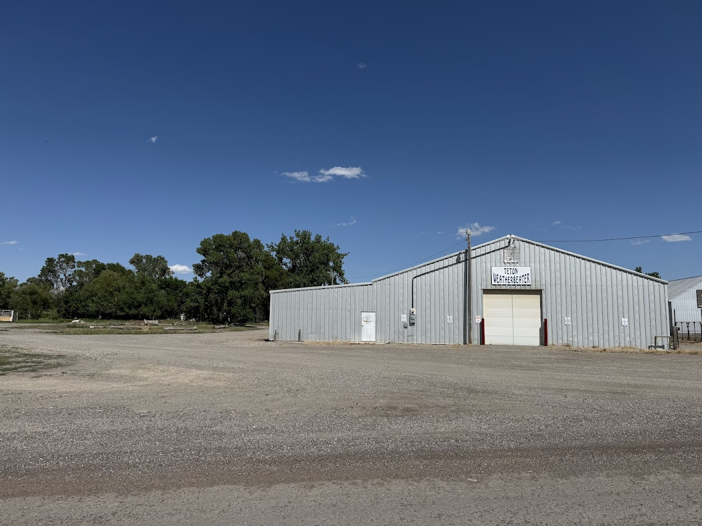
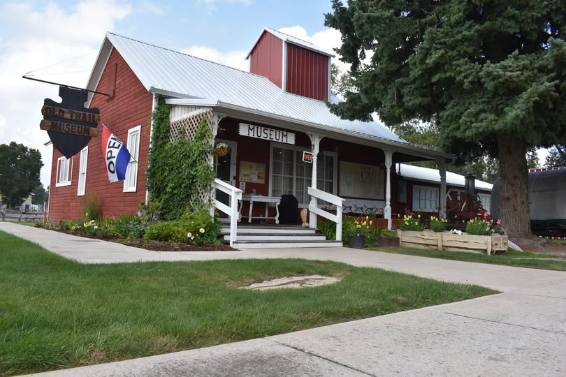
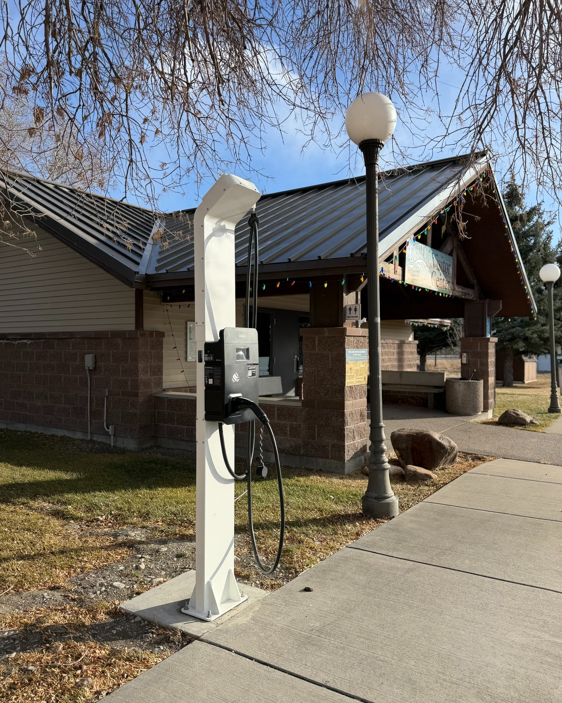

Weatherbeater Renovation
PlanningRenovation and improvements to the Weatherbeater facility to enhance its capacity to serve visitors and support tourism-related activities in the Choteau area.
View Project Details →Supporting tourism infrastructure and community amenities in the Choteau and Bynum area through dedicated grant funding.
Funds provided by the Montana Department of Commerce and supported by the Choteau Area Port AuthorityProgram Overview
The Choteau Area Community Tourism Grant is a $2.75 million, multi-year program running through May 2030, dedicated to strengthening tourism infrastructure in Choteau and Bynum, Montana.
Funding supports major facility improvements, interpretive center development, and community amenity projects that benefit visitors and residents alike. Eligible projects must be located within Choteau or Bynum.
The grant is funded by the Montana Department of Commerce and administered locally through the Choteau Area Port Authority.
Funding Data
The charts below reflect the planned allocation of grant funds across years and projects. Figures are updated as information is confirmed.
Funded Initiatives
Three major projects are supported through this grant program, each contributing to the region's tourism and cultural infrastructure.

Renovation and improvements to the Weatherbeater facility to enhance its capacity to serve visitors and support tourism-related activities in the Choteau area.
View Project Details →
Development of a Rocky Mountain Front Interpretive Center at the Old Trail Museum, expanding interpretive exhibits and educational resources for visitors to the region.
View Project Details →
Expansion of gallery space at the Montana Dinosaur Center, accommodating new fossil exhibits and increasing visitor capacity at one of the area's premier tourist destinations.
View Project Details →Community Impact
In addition to the major funded initiatives, the grant program supports community amenity projects that serve both residents and visitors.

Installation of electric vehicle charging stations to support sustainable travel and attract EV-driving visitors to the Choteau and Bynum area.

The Choteau Public Schools have installed a Garaventa X3 Inclined Platform Lift in the School Auditorium, making the facility fully accessible for the first time. The total cost of the project was $39,500, and the investment moved up the timeline significantly. The Auditorium is used not only for school events but for community concerts and programs that draw visitors from the area.
"Our school has this incredible resource in the form of our beautiful auditorium. It is an incredible asset to bring people together and to our town. Now, with the addition of this wheelchair lift, our auditorium can be fully appreciated by any visitor, and they can take part in our programming in the front row!" — Will Dewey, Choteau Public Schools

Grant funding helped cover the cost of sandblasting and repainting the pool, extending the life of this beloved community recreation facility.